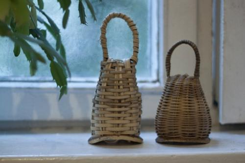
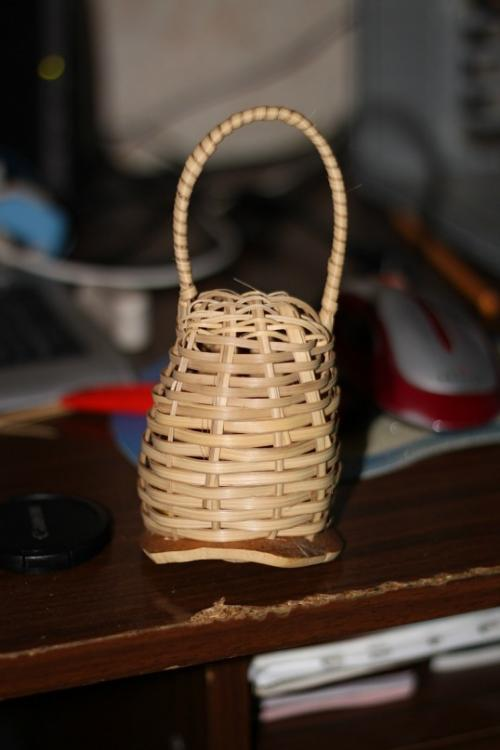

Семинар FICA по плетению кашиши
«Теперь я знаю как это делать!»
С такими мыслями я уходил с семинара, который устроили участники школы FICA. Было здорово: новые знакомства, обсуждения различных тем, бразильская музыка и много другое — все это сопровождало увлекательное занятие плетения „погремушек“.
Не зря в требование семинара входило наличие у участников перчаток и тряпочки, не считая ножа, т.к. без крови не обошлось. Парень, сидевший рядом со мной, вроде его зовут Иван, взял самый опасный нож, которым однажды Ímã отрезал себе часть сустава на пальце, и в процессе обработки материала вспахал себе большой палец на руке. В итоге, кстати быстренько он сплел свои кашиши, у него они получились «кровавыми». Такими надо сопровождать только жогу люту :)
СПАСИБО, Ímã!!!
Это был замечательный семинар и опыт плетения, правда плетение заняло все наше время, но я абсолютно доволен.
И напоследок мои первые кашиши (слева) и «китовые»(справа)

P. S. сегодня (5 июля) сплел еще одни из оставшегося материала! =D
Наполнять было нечем, поэтому сбегал в магазин игрушек и купил 2 пачки пластмассовых пулек.
